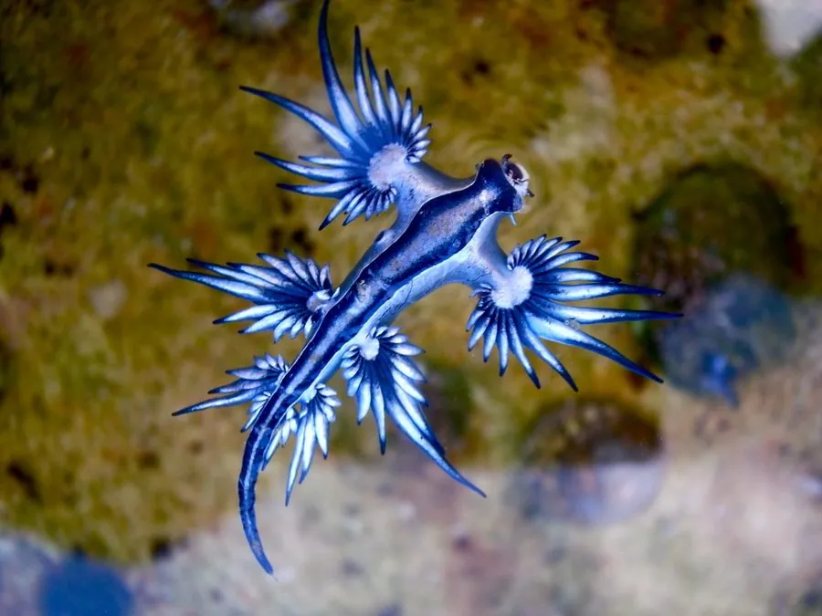

软体动物 · 动物界
蓝天使海蛞蝓 Glaucus atlanticus

漂浮在开阔海面的小型海蛞蝓，蓝白相间的体色如同伪装，以僧帽水母等有毒水母为食，并能把毒刺储存到自己体内。
- 分类
- 门软体动物门纲腹足纲目裸鳃目科灰翼科属海神鳃属
- 栖息环境
- 开阔海洋的表层水体，随洋流和信风漂流，常被冲上海滩
- 地理分布
- 全球热带和温带海洋的表层，包括大西洋、太平洋和印度洋
- 保护级别
- 暂无评估；中国未列入国家重点保护野生动物名录
物种志
蓝天使海蛞蝓身体细长、左右对称，成体通常 1.5–3 cm，最大约 4 cm。身体两侧伸出数对指状的鳃突，用于呼吸和储存从猎物身上获得的刺细胞。它的体色呈现鲜明的反荫蔽：背面银灰，腹面宝蓝，并且常常仰浮在海面上，让蓝色的一面朝上、银色的一面朝下。它有 6 条腕状结构，口部位于身体前端，靠齿舌撕咬猎物。
蓝天使海蛞蝓是远洋漂浮生活的裸鳃类，分布于全球热带和温带的表层海域，包括大西洋、太平洋和印度洋，常随洋流和信风漂流，因此经常被冲上海滩。它专门捕食僧帽水母、帆水母等浮游管水母，对猎物的刺细胞有免疫力，还能把未消化的刺细胞完整地转移到自己的鳃突中，用来防御天敌，因此触碰它同样会被蜇伤。它雌雄同体，交配后双方都能产卵，卵串附着在漂浮物或猎物残骸上。蓝色的一面朝上可以躲避海鸟，银色的一面朝下可以躲避水中的鱼类。目前它没有IUCN 的正式评估，中国也未将其列入国家重点保护野生动物名录。
形态与习性
- 食性以僧帽水母、帆水母等浮游管水母为食
- 体长通常 1.5–3 cm，最大约 4 cm
- 防御把猎物的刺细胞储存到鳃突中，用于自身防御
- 漂浮仰浮于海面，靠表面张力和腹足黏液保持位置
- 繁殖雌雄同体，交配后双方均可产卵，卵串附着漂浮物
- 分布热带和温带海洋的表层，常被洋流冲上海滩
趣味知识
- 蓝天使海蛞蝓把僧帽水母的刺细胞完整储存到体内，自己反而变得有毒。
- 它仰浮在海面上，蓝色腹面朝上躲避海鸟，银色背面朝下躲避鱼类。
- 它是为数不多以僧帽水母为食的动物之一，被冲上岸时仍然带有毒性。